2. Kafli - Gerð og uppbygging efna
Viðeigandi efnisnotkun er háð þekkingu á grunneiginleikum efnanna. Allir eiginleikar efna byggja á gerð þeirra og uppbyggingu, sérstaklega gildir að styrkur, stífleiki, rafleiðni og ending eru beint háðir grunnuppbyggingu þeirra. Við getum skoðað uppbyggingu efna á mismunandi skölum, frumeindaskala, kristaluppbyggingu á míkróskala og póruuppbyggingu á makróskala. Í þessum kafla verður fjallað um frumeindabyggingu, tengigerðir og kristalbyggingu en holrýmd og póruuppbyggingu er lýst nánar í 3. kafla.
2.1. Frumeindir
Öll efni eru byggð upp af frumeindum (e. atoms). Frumeind er minnsta eining frumefnis sem heldur efnafræðilegum eiginleikum þess.
Frumeindir eru byggðar upp úr þremur tegundum einda:
róteindum (e. protons), sem hafa jákvæða rafhleðslu,
nifteindum (e. neutrons), sem eru óhlaðnar,
rafeindum (e. electrons), sem hafa neikvæða rafhleðslu.
Róteindir og nifteindir mynda kjarna (e. nucleus) frumeindarinnar en rafeindirnar eru umhverfis kjarnann. Rafeindir eru miklu léttari en róteindir og nifteindir og því er nánast allur massi frumeindarinnar í kjarnanum.
Fjöldi róteinda í kjarna er kallaður sætistala, \(Z\), og ákvarðar um hvaða frumefni er að ræða. Í óhlaðinni frumeind er fjöldi rafeinda sá sami og fjöldi róteinda og heildarhleðsla frumeindarinnar því núll.
Ef frumeind tekur til sín eða gefur frá sér rafeindir myndast jón. Frumeind sem tekur til sín rafeindir verður neikvætt hlaðin en frumeind sem gefur frá sér rafeindir verður jákvætt hlaðin.
2.1.1. Rafeindahvel
Í einföldu Bohr-líkani frumeindarinnar er gert ráð fyrir að rafeindir raðist á mismunandi rafeindahvel (e. electron shells) umhverfis kjarnann.
Rafeindir í ysta hveli frumeindarinnar kallast gildisrafeindir (e. valence electrons). Þær hafa mikil áhrif á efnafræðilega eiginleika frumefnisins og hvernig það myndar efnatengi við önnur atóm. Við komum aftur að þessu þegar fjallað verður um efnatengi síðar í kaflanum.

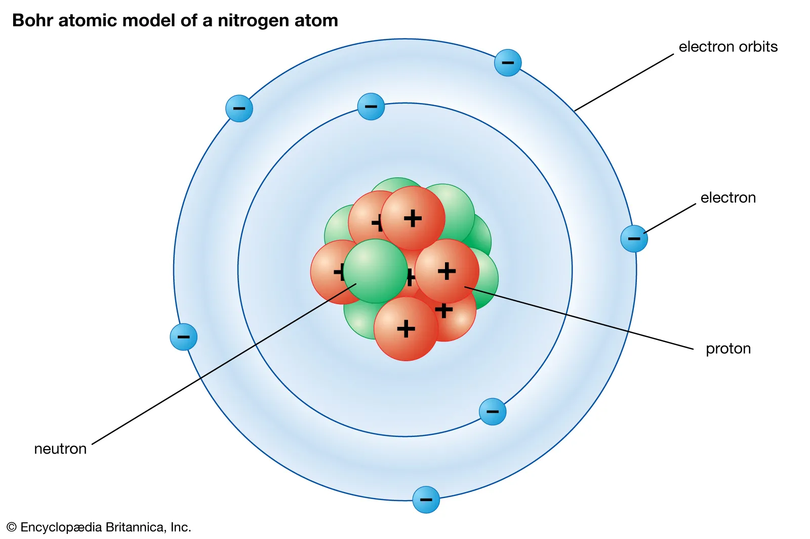
Mynd 2.1 Einfalt Bohr-líkan af köfnunarefnisfrumeind.
2.1.2. Frumefni og lotukerfið
Frumefni er efni sem eingöngu er gert úr frumeindum með sama fjölda róteinda. Frumefnunum er raðað í lotukerfið eftir sætistölu.
Frumefni í sama dálki lotukerfisins hafa oft svipaða efnafræðilega eiginleika. Það tengist meðal annars fjölda gildisrafeinda þeirra.
Í lotukerfinu má finna ýmsar upplýsingar um frumefnin, meðal annars sætistölu, frumeindamassa og efnafræðilegt tákn.
2.1.3. Samsætur
Frumeindir sama frumefnis hafa alltaf sama fjölda róteinda en geta haft mismunandi fjölda nifteinda. Slíkar frumeindir kallast samsætur (e. isotopes).
Kolefni er dæmi um frumefni sem hefur fleiri en eina samsætu. Kolefni-12, kolefni-13 og kolefni-14 hafa öll sex róteindir og eru því öll kolefni, en þau hafa mismunandi fjölda nifteinda og þar með mismunandi massa.
2.1.4. Frumeindamassi, mól og Avogadros-talan
Massi einstakrar frumeindar er mjög lítill, af stærðargráðunni \(10^{-27}\) kg. Því er hentugra að nota frumeindamassaeininguna, \(u\).
Ein frumeindamassaeining er skilgreind sem \(1/12\) af massa kolefnis-12 frumeindar:
Hlutfallslegur frumeindamassi, \(A_r\), er skilgreindur sem:
þar sem \(m\) er massi frumeindarinnar og \(m_u\) er frumeindamassaeiningin.
Frumeindamassi frumefnis sem gefinn er upp í lotukerfinu er yfirleitt vegið meðaltal massa þeirra samsæta frumefnisins sem finnast í náttúrunni. Þess vegna er gildið ekki endilega heil tala.
2.1.5. Mól
Frumeindir og sameindir eru svo smáar að jafnvel í mjög litlu sýnilegu magni efnis er gríðarlegur fjöldi einda. Til þess að lýsa slíku efnismagni er einingin mól notuð.
Eitt mól inniheldur
eindir. Talan \(N_A\) kallast Avogadros-talan.
Mólmassi, \(M\), segir til um massa eins móls af efni og er yfirleitt gefinn upp í g/mól.
Vísbending
Tölugildi frumeindamassa frumefnis í \(u\) er það sama og tölugildi mólmassa þess í g/mól.
Kolefni með frumeindamassann \(12u\) hefur því mólmassann um 12 g/mól.
Gott að vita: Hversu smátt getum við séð?
Þegar fjallað er um uppbyggingu efna er gagnlegt að hafa tilfinningu fyrir þeim stærðargráðum sem um ræðir.
Algengar frumeindir hafa radíus af stærðargráðunni 0,5–2 Å, eða um 50–200 pm. Sameindir eru einnig á þessum mjög smáa skala.
Vatnssameind er aðeins nokkrir ångström að stærð.
Til samanburðar er þvermál mannshárs af stærðargráðunni tugir míkrómetra. Frumeindir og sameindir eru því mörgum stærðargráðum minni en það sem hægt er að sjá með berum augum.
Ljóssmásjá getur stækkað sýni um það bil þúsundfalt og greint smáatriði niður undir brot úr míkrómetra.
Rafeindasmásjár geta greint mun smærri byggingu og gera okkur kleift að rannsaka efni niður á nanómetrakvarða.
2.2. Sameindir
Frumeindir geta tengst saman og myndað sameindir (e. molecules). Sameind er því samsett úr tveimur eða fleiri frumeindum sem tengjast saman. Frumeindirnar geta verið af sama frumefni eða mismunandi frumefnum.
Til dæmis er súrefnissameind, \(O_2\), gerð úr tveimur súrefnisfrumeindum. Vatnssameind, \(H_2O\), er hins vegar gerð úr tveimur vetnisfrumeindum og einni súrefnisfrumeind.
Efnaformúla sameindar segir þannig bæði til um hvaða frumefni mynda sameindina og hversu margar frumeindir eru af hverju frumefni.

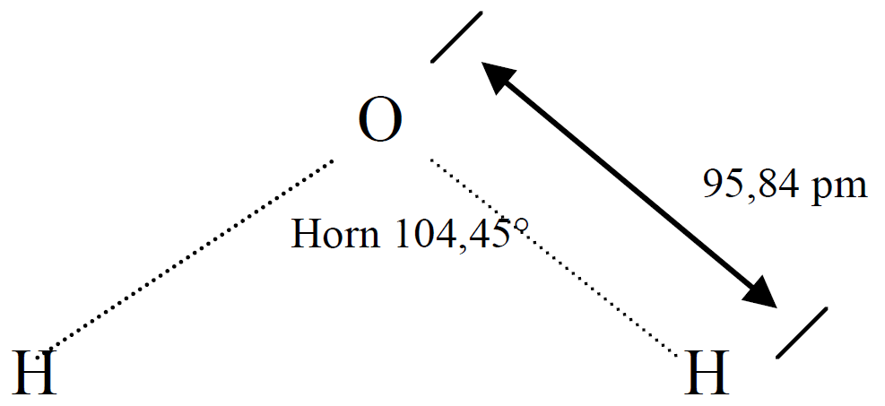
Mynd 2.2 Vatnssameind, \(H_2O\), er gerð úr tveimur vetnisfrumeindum og einni súrefnisfrumeind.
2.2.1. Sameindamassi
Sameindamassi fæst með því að leggja saman frumeindamassa allra frumeindanna sem mynda sameindina.
Vatn, \(H_2O\), inniheldur tvær vetnisfrumeindir og eina súrefnisfrumeind. Frumeindamassi vetnis er um \(1,008\,u\) og frumeindamassi súrefnis um \(16,00\,u\).
Sameindamassi vatns er því
eða um \(18,02\,u\).
Á sama hátt fæst mólmassi vatns:
Tölugildi sameindamassa í \(u\) og mólmassa í g/mól eru því þau sömu.
Dæmi: Mólmassi gifs
Reiknum mólmassa gifs, kalsíumsúlfat-tvíhýdrats,
Mólmassinn fæst með því að leggja saman mólmassa allra frumeindanna í efnasambandinu.
Frumefni |
Mólmassi [g/mól] |
Fjöldi |
Alls [g/mól] |
|---|---|---|---|
Ca |
40,08 |
1 |
40,08 |
S |
32,06 |
1 |
32,06 |
O |
16,00 |
6 |
96,00 |
H |
1,008 |
4 |
4,032 |
172,17 |
Mólmassi gifs er því um
Massi einnar sameindar fæst síðan með því að deila mólmassanum með Avogadros-tölunni:
2.3. Orka í bindingum og kraftar milli frumeinda
2.4. Kraftar milli frumeinda og sameinda
Frumeindir og sameindir hafa jákvæðar og neikvæðar hleðslur. Vegna dreifingar þessara hleðslna verka bæði aðdráttarkraftar og fráhrindikraftar milli einda.
Þegar tvær eindir eru langt hvor frá annarri eru kraftarnir milli þeirra litlir. Þegar þær nálgast hvor aðra verður aðdráttur milli þeirra meiri. Ef þær koma hins vegar mjög nálægt hvor annarri verða fráhrindikraftar ráðandi.
Því myndast ákveðin jafnvægisfjarlægð, \(r_0\), þar sem aðdráttar- og fráhrindikraftarnir vega hvor annan upp. Við þessa fjarlægð er kerfið í stöðugu jafnvægi og stöðuorka þess er í lágmarki.
2.4.1. Lennard–Jones líkanið
Samband stöðuorku tveggja einda og fjarlægðarinnar milli þeirra má lýsa með svokölluðu Lennard–Jones líkani.
þar sem \(r\) er fjarlægðin milli eindanna, \(r_0\) er jafnvægisfjarlægðin og \(\Phi_0\) lýsir dýpt orkudalsins.

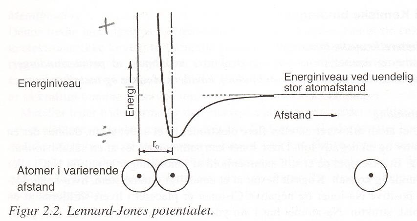
Mynd 2.3 Stöðuorka sem fall af fjarlægð milli einda samkvæmt Lennard–Jones líkaninu.
Lágmark ferilsins samsvarar jafnvægisfjarlægðinni \(r_0\). Til þess að færa eindirnar í sundur frá þessari stöðu þarf að leggja til orku. Dýpt orkudalsins gefur því vísbendingu um hversu sterk tengslin milli eindanna eru.
2.4.2. Kraftar milli einda
Krafturinn milli eindanna tengist breytingu stöðuorkunnar með fjarlægð:
Við jafnvægisfjarlægðina \(r_0\) er krafturinn núll. Ef eindirnar færast aðeins lengra í sundur verður aðdráttarkraftur ráðandi og leitast við að færa þær aftur í jafnvægisstöðu. Ef þær færast nær hvor annarri verður fráhrindikraftur ráðandi.

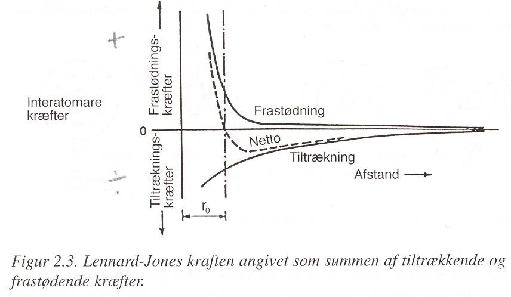
Mynd 2.4 Aðdráttar- og fráhrindikraftar milli einda sem fall af fjarlægð.
Tengingin við eiginleika efna
Kraftar og bindingar milli einda hafa bein áhrif á eiginleika efna.
Sterkari bindingar þýða að meiri orku þarf til að aðskilja eindirnar. Efni með sterkar bindingar hafa því almennt hærra bræðsluhitastig.
Lögun orkudalsins tengist stífleika efnisins. Því brattari sem orkukúrfan er í kringum jafnvægisstöðuna, því meiri kraft þarf til að breyta fjarlægðinni milli eindanna og því stífara er efnið.
2.5. Efnafræðilegir bindingar
Gerð efnafræðilegra bindinga hefur mikil áhrif á eiginleika efna. Bindingarnar ráða meðal annars hvernig frumeindir raðast saman og hversu auðvelt er að færa þær úr jafnvægisstöðu.
Efnafræðilegum bindingum má skipta í tvo meginflokka:
fyrsta stigs efnafræðilegar bindingar, sem eru sterkar bindingar milli frumeinda. Í þessum bindingum eru það rafeindirnar á ysta hvelinu (valenshvelinu) sem leika höfuðhlutverk. Bindingarnar verða til vegna viðleitni frumeindanna til þess að gera valenshvelið stöðugt, þ.e. fylla það rafeindum.
annars stigs efnafræðilegar bindingar, sem eru veikari og verka meðal annars milli sameinda. Annars stigs bindingar eru veikari en fyrsta stigs bindingar. Van der Waal bindingar og vetnisbindingar eru algengustu annars stigs bindingarnar.
2.5.1. Fyrsta stigs efnafræðilegar bindingar
Fyrsta stigs efnafræðilegar bindingar (e. primary chemical bonds) myndast með þátttöku rafeinda í ysta rafeindahveli frumeindanna, þ.e. gildisrafeindanna.
Þær skiptast í þrjár megingerðir:
jónatengi,
samgild tengi,
málmtengi.
2.5.1.1. Jónatengi
Jónatengi (e. ionic bond) myndast þegar ein eða fleiri rafeindir flytjast frá einni frumeind til annarrar. Við það myndast jákvætt og neikvætt hlaðnar jónir. Gagnstæðar rafhleðslur jónanna dragast að hvor annarri og mynda bindinguna.
Matarsalt, \(NaCl\), er dæmi um efni þar sem jónatengi eru ráðandi. Natríumfrumeind, \(Na\), gefur frá sér eina gildisrafeind og verður að jákvæðri \(Na^+\) jón. Klórfrumeind, \(Cl\), tekur við rafeindinni og verður að neikvæðri \(Cl^-\) jón.

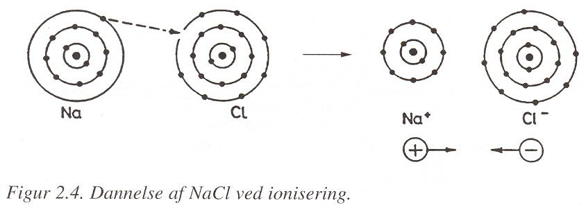
Mynd 2.5 Myndun jónatengis.
2.5.1.2. Samgild tengi
Samgilt tengi (e. covalent bond) myndast þegar tvær frumeindir deila einum eða fleiri rafeindapörum. Þannig geta frumeindirnar náð stöðugri rafeindaskipan í ysta rafeindahveli (kallað valenshvel).
Samgild tengi eru til dæmis milli frumeindanna í sameindum vetnis, súrefnis og köfnunarefnis.
Efni þar sem sterk samgild tengi mynda samfellda byggingu geta haft mikinn styrk en eru oft stökk.

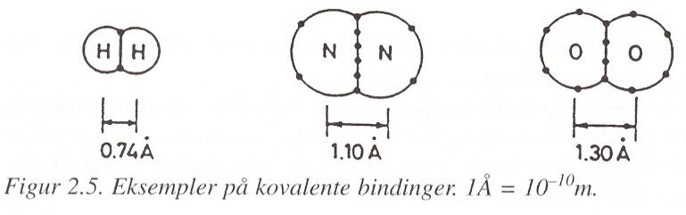
Mynd 2.6 Samgild tengi myndast þegar frumeindir deila rafeindum.
2.5.2. Málmbindingar
2.5.2.1. Málmtengi
Málmtengi (e. metallic bond) eru einkennandi fyrir málma. Í málmi eru gildisrafeindirnar ekki bundnar við einstakar frumeindir heldur geta þær hreyfst tiltölulega frjálst milli jákvætt hlaðinna málmjóna.
Oft er þessu lýst þannig að jákvæðar málmjónir séu umkringdar sameiginlegu rafeindaskýi. Aðdráttur milli jákvæðu jónanna og neikvæða rafeindaskýsins heldur efninu saman.

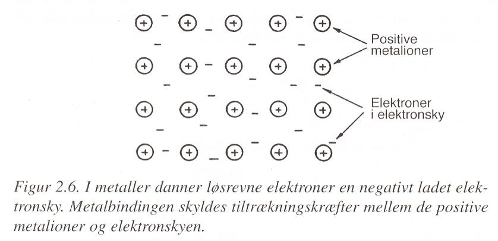
Mynd 2.7 Í málmtengi eru gildisrafeindir ekki bundnar við eina ákveðna frumeind.
Þessi uppbygging skýrir ýmsa mikilvæga eiginleika málma. Frjáls hreyfing rafeindanna stuðlar að góðri rafleiðni og varmaleiðni. Jafnframt geta frumeindalög í málmgrindinni færst til án þess að bindingar rofni varanlega; ný tengsl myndast þegar frumeindirnar færast. Þetta á þátt í því að margir málmar geta formbreyst plastískt án þess að brotna.
2.5.3. Annars stigs efnafræðilegar bindingar
Annars stigs efnafræðilegar bindingar eru almennt mun veikari en fyrsta stigs bindingar. Þær byggjast á aðdráttarkröftum milli jákvæðra og neikvæðra hleðslusvæða í frumeindum eða sameindum.
Tvær mikilvægar gerðir eru:
van der Waals-bindingar,
vetnistengi.
2.5.3.1. van der Waals-bindingar
Rafeindir eru á stöðugri hreyfingu og dreifing þeirra um frumeind eða sameind getur því tímabundið orðið ósamhverf. Þá getur myndast tímabundin hleðsluskipting, eða tvískaut (e. dipole).
Slík hleðsluskipting getur haft áhrif á nærliggjandi eindir og valdið aðdráttarkröftum milli þeirra. Þessir kraftar kallast van der Waals-kraftar.

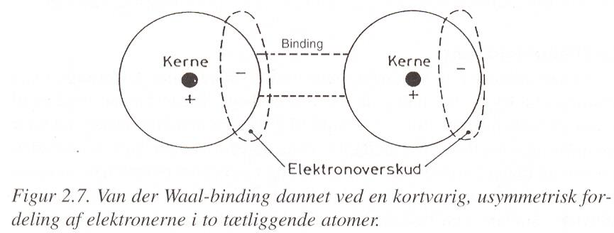
Mynd 2.8 van der Waals-binding vegna hleðsludreifingar milli nálægra einda.
2.5.3.2. Vetnistengi
Vetnistengi (e. hydrogen bond) er annars stigs binding sem getur myndast milli sameinda þegar vetni er bundið við mjög rafneikvæða frumeind.
Vatn er mikilvægt dæmi. Innan hverrar vatnssameindar eru vetnis- og súrefnisfrumeindir tengdar með samgildum tengjum. Hleðslan dreifist hins vegar ekki jafnt um sameindina. Súrefnishluti hennar verður lítillega neikvæður en vetnishlutinn lítillega jákvæður.
Þessi hleðsluskipting veldur aðdrætti milli nálægra vatnssameinda og þar myndast vetnistengi.

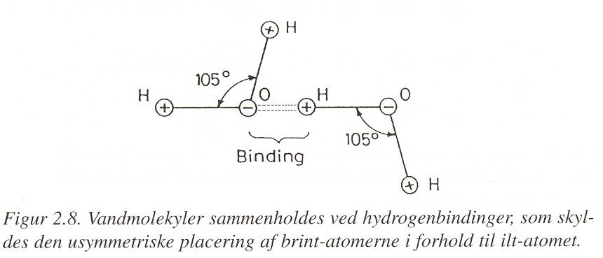
Mynd 2.9 Vetnistengi milli vatnssameinda.
2.5.4. Yfirlit yfir efnafræðilegar bindingar
Efnafræðilegar bindingar hafa mismunandi styrk og eðli og hafa því mismunandi áhrif á eiginleika efna. Gerð bindinganna er einn af þeim grunnþáttum sem tengja saman innri byggingu efnis og eiginleika þess.

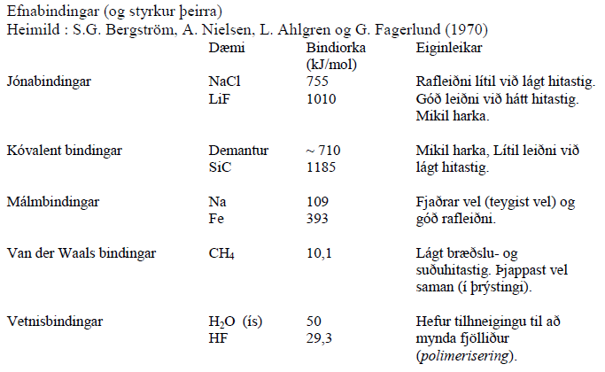
Mynd 2.10 Yfirlit yfir helstu gerðir efnafræðilegra bindinga.
2.6. Uppbygging efna
Föst efni geta haft mismunandi innri uppbyggingu. Í kristölluðum efnum raðast frumeindir, jónir eða sameindir reglulega, en í ókristölluðum efnum er röðunin minni.
Hér verður fjallað um kristalbyggingu, galla í kristalgrindinni og ókristölluð efni.
2.6.1. Kristalbygging
Í kristölluðum efnum raðast frumeindir, jónir eða sameindir reglulega í þrívíðu mynstri. Þessa reglulegu uppröðun má lýsa með kristalgrind (e. crystal lattice).
Minnsta eining kristalgrindarinnar sem hægt er að endurtaka í þrjár víddir þannig að hún myndi alla kristalgrindina kallast kristaleining (e. unit cell).

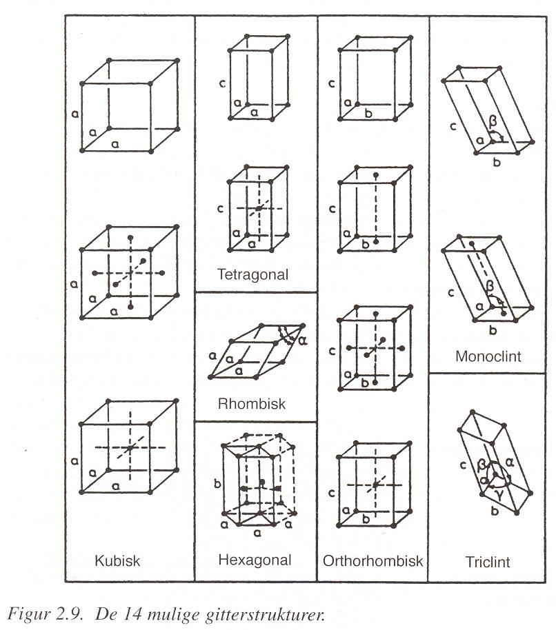
Mynd 2.11 Regluleg uppröðun einda í kristölluðu efni.
Stöðug kristalbygging leitast við að hafa sem lægsta mögulega orku. Við uppröðun eindanna þarf jafnframt að vera rafhlutleysi og pökkun þeirra verður eins þétt og aðstæður leyfa.
Margar mismunandi kristalgrindur eru mögulegar. Alls eru skilgreindar 14 mismunandi grindargerðir, sem byggjast á mismunandi lögun kristaleiningarinnar og uppröðun einda innan hennar.
Meðal þekktustu og algengustu kristalbygginganna eru þrjár teningslaga grindur:
einföld teningsgrind (e. simple cubic, SC),
rúmmiðjuð teningsgrind (e. body-centered cubic, BCC),
hliðmiðjuð teningsgrind (e. face-centered cubic, FCC).
Í einfaldri teningsgrind, SC, eru frumeindir staðsettar í hornum kristaleiningarinnar.
Í rúmmiðjaðri teningsgrind, BCC, eru frumeindir í hornunum og auk þess ein frumeind í miðju kristaleiningarinnar.
Í hliðmiðjaðri teningsgrind, FCC, eru frumeindir í hornunum og í miðju hvers flatar kristaleiningarinnar.

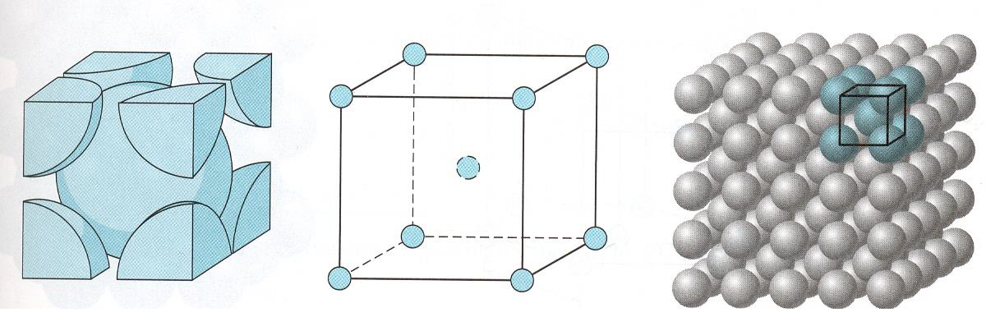
Mynd 2.12 BCC kristaleining (Rúmmiðjuð teningsgrind).
2.6.1.1. Fjöldi frumeinda í kristaleiningu
Frumeindir á mörkum kristaleiningar tilheyra fleiri en einni kristaleiningu. Frumeind sem er í horni tenings tilheyrir átta aðliggjandi kristaleiningum og telst því sem \(1/8\) frumeindar í hverri þeirra. Frumeind sem er í miðju flatar tilheyrir tveimur kristaleiningum og telst því sem \(1/2\) frumeind.
Því tilheyrir að meðaltali:
1 frumeind einfaldri teningsgrind (SC) (n=8*1/8=1),
2 frumeindir rúmmiðjaðri teningsgrind (BCC) (n=1+8*1/8=2),
4 frumeindir hliðmiðjaðri teningsgrind (FCC) (n=6*1/2+8*1/8=4).
Rúmmiðjaðar og hliðmiðjaðar teningsgrindur eru algengar í málmum. Kristalbygging sama efnis getur jafnvel breyst með hitastigi. Járn er dæmi um efni sem getur tekið bæði BCC- og FCC-kristalbyggingu við mismunandi hitastig.
2.6.2. Grindargallar
Raunveruleg kristölluð efni hafa ekki fullkomna kristalbyggingu. Í kristalgrindinni eru ýmiss konar grindargallar (e. lattice defects), þ.e. frávik frá reglulegri uppröðun frumeindanna.
Grindargallar hafa mikil áhrif á eiginleika efna og þá sérstaklega aflfræðilega eiginleika þeirra. Þeir hafa meðal annars áhrif á hvernig kristölluð efni formbreytast þegar þau verða fyrir álagi.
Grindargöllum má meðal annars skipta í:
punktgalla,
línugalla eða misgengi.
2.6.2.1. Punktgallar
Punktgallar (e. point defects) eru staðbundin frávik í kristalgrindinni. Þeir geta meðal annars myndast þegar frumeind vantar, auka frumeind kemur fyrir á milli reglulegra grindarstaða eða þegar frumeind af annarri gerð tekur sæti í kristalgrindinni.
Helstu dæmi um punktgalla eru:
eyða (e. vacancy), þegar frumeind vantar á grindarstað,
innskotsfrumeind (e. interstitial atom), þegar aukafrumeind situr á milli reglulegra grindarstaða,
staðgengilsfrumeind (e. substitutional atom), þegar frumeind af annarri gerð kemur í stað frumeindar í kristalgrindinni.

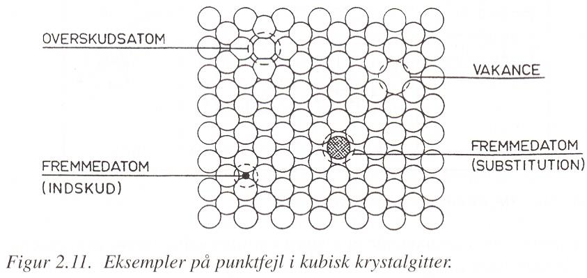
Mynd 2.13 Dæmi um punktgalla í kristalgrind.
2.6.2.2. Línugallar – misgengi
Línugallar, einnig kallaðir misgengi (e. dislocations), eru gallar sem ná eftir línu í kristalgrindinni.
Einfalt dæmi er þegar aukalegt hálft frumeindaplan liggur inni í kristalgrindinni. Regluleg uppröðun frumeindanna raskast þá í kringum enda hálfplansins.

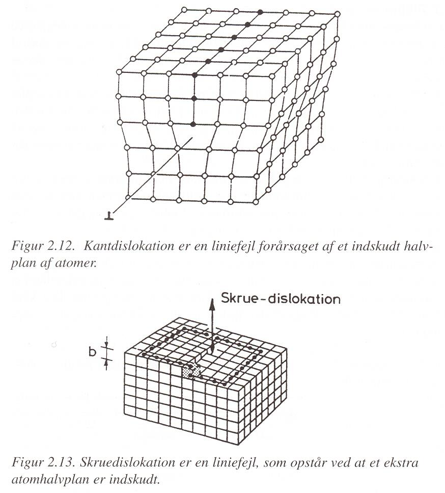
Mynd 2.14 Línugalli í kristalgrind.
Misgengi skipta miklu máli fyrir aflfræðilega eiginleika kristallaðra efna. Hreyfing misgengja gerir frumeindaplönum kleift að færast hvert miðað við annað án þess að öll tengi milli tveggja heilla frumeindaplana þurfi að rofna samtímis.
Þetta er ein af meginforsendum þess að málmar geti formbreyst plastískt.
2.6.2.3. Skrið og skriðkerfi
Þegar misgengi færist eftir kristalgrindinni geta frumeindaplön færst hvert miðað við annað. Slík hreyfing kallast skriðhreyfing (e. slip).
Skriðhreyfing verður helst eftir ákveðnum flötum og í ákveðnar stefnur innan kristalgrindarinnar. Samsetning skriðflatar og skriðstefnu kallast skriðkerfi (e. slip system).
Skriðhreyfing á auðveldast með að eiga sér stað þar sem frumeindirnar liggja þétt saman. Því hefur kristalbygging efnisins áhrif á hversu auðveldlega það getur formbreyst plastískt. Skriðkerfi er háð kristaluppbyggingu efnisins. Skriðplanið þéttpakkaðasta planið innan kristalsins og skriðstefnan er þéttpakkaðasta stefnan innan skriðplansins. Skriðplan í FCC kristan hefur þrjár skriðstefnur. Innan kristaleiningarinnar eru fjögur slík plön. Þess vegna eru 4x3 = 12 einstök skriðkerfi í FCC kristal.
Hreyfing misgengja og virkni skriðkerfa eru þannig mikilvægur hluti af skýringu á sveigjanleika og plastískri formbreytingu málma. Málmar sem eru með FCC eða BCC kristalbyggingu eru með töluvert mörg skriðkerfi (amk. 12). Slíkir málmar eru seigir (e. ductile), þ.e. þeir geta formbreyst mikið áður en þeir brotna, vegna þess að skriðkerfi gera efninu kleift að formbreytast plastískt. Málmar byggðir HCP kristaleiningar með fáum skriðkerfum eru oftast stökkir (e. brittle).
Þegar við setjum álag á efni sem er byggt upp sem kristall þá mun efnið formbreytast eftir þéttsetnustu stefnunni í þéttsetnasta planinu, því í skriðkerfinu eru stystar bindingar og auðveldast að mynda nýjar. Því fleiri slík plön sem eru í kristallinum þeim mun seigara er efnið, því hver eind hefur fleiri „undankomu“ leiðir til að tengjast nýjum eindum undir álagi.
2.6.3. Ókristölluð efni
Ekki eru öll föst efni kristölluð. Í ókristölluðum efnum (e. non-crystalline materials) er ekki regluleg langdræg uppröðun frumeinda eða sameinda eins og í kristölluðum efnum.
Það getur þó verið ákveðin staðbundin röðun milli næstu einda. Uppbyggingin er því ekki algerlega tilviljanakennd, en mynstrið endurtekur sig ekki reglulega um allt efnið.
Ókristölluð efni geta meðal annars verið byggð úr löngum sameindakeðjum eða óreglulegu þrívíðu neti.
Dæmi um ókristölluð efni eru meðal annars:
gler,
ýmis plastefni,
gúmmí,
lífræn efni á borð við timbur.
Ókristölluð efni hafa almennt ekki eitt skýrt bræðslumark. Við hitun mýkjast þau oft yfir ákveðið hitastigsbil, öfugt við kristölluð efni þar sem bráðnun á sér stað við ákveðnara hitastig.
2.6.3.1. Fjölliður
Mörg ókristölluð efni eru byggð úr fjölliðum (e. polymers). Fjölliða er stór sameind sem samanstendur af mörgum minni byggingareiningum sem tengjast saman í langar keðjur.
Innan fjölliðukeðjunnar eru yfirleitt sterk fyrsta stigs efnatengi en milli keðjanna geta verið veikari annars stigs bindingar, svo sem van der Waals-bindingar og vetnistengi.
Uppröðun keðjanna er oft óregluleg og því myndast ekki regluleg kristalgrind um allt efnið.
2.6.3.2. Timbur
Timbur er náttúrulegt efni sem er að stórum hluta byggt úr fjölliðum.
Helstu fjölliðurnar í viði eru:
beðmi (e. cellulose),
hálfbeðmi (e. hemicellulose),
tréni (e. lignin).
Þessar fjölliður raðast saman í flókna innri byggingu sem hefur mikil áhrif á styrk, stífleika og rakaeiginleika timburs.

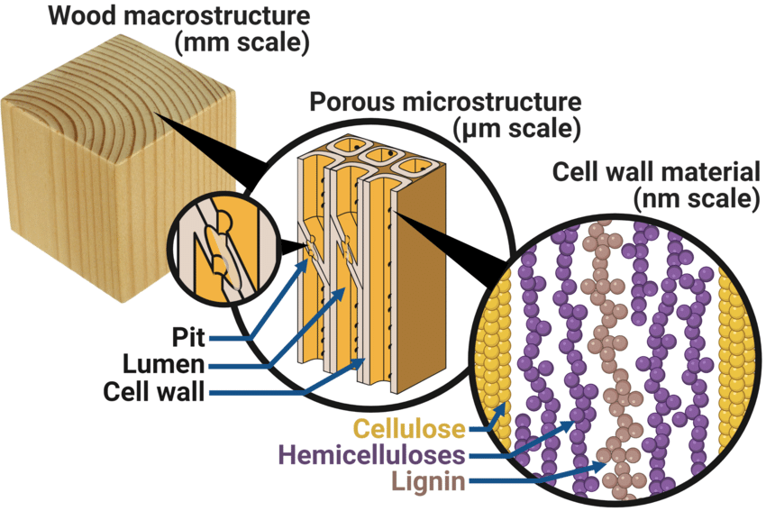
Mynd 2.15 Uppbygging timburs úr náttúrulegum fjölliðum.
[TF21]
2.6.3.3. Plastefni
Plastefni eru að mestu byggð úr manngerðum fjölliðum.
Eiginleikar plastefna ráðast meðal annars af gerð fjölliðukeðjanna, lengd þeirra, tengingum milli keðja og því hvernig keðjurnar raðast saman.

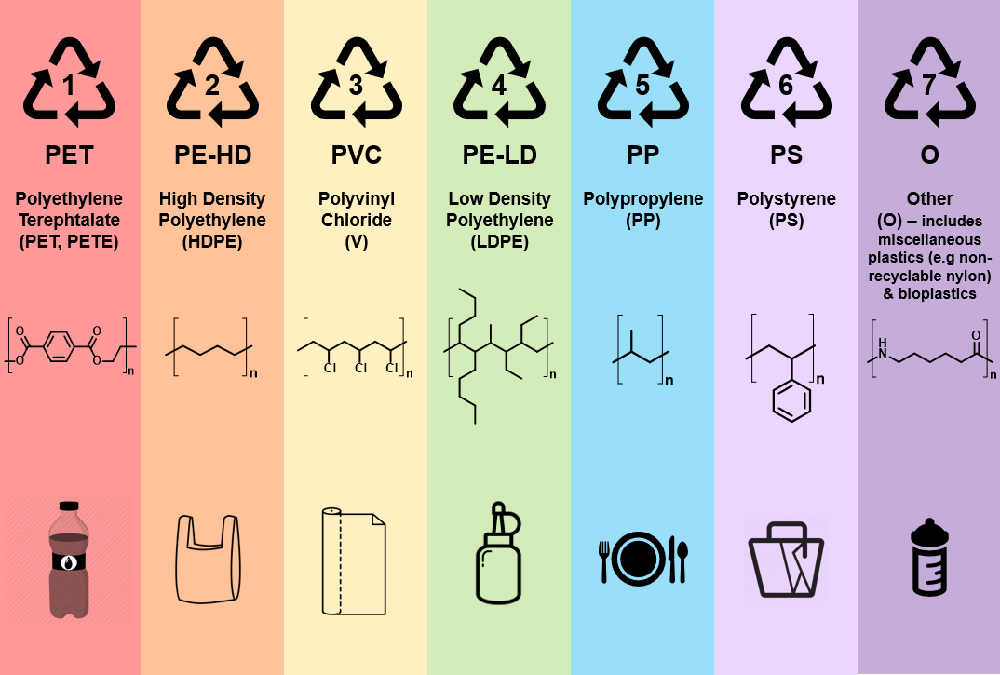

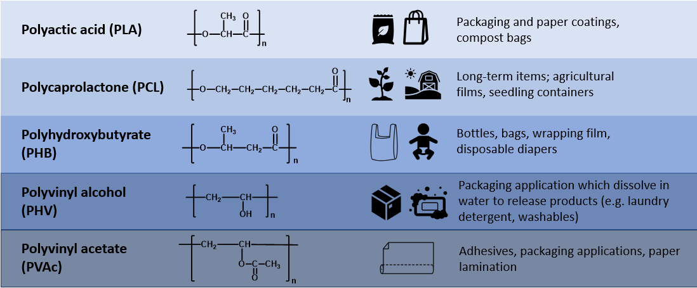
[Gre19]
2.6.3.4. Gúmmí
Gúmmí (e. rubber eða elastomer) er fjölliðuefni þar sem sameindakeðjurnar geta aflagast mikið og færst til innbyrðis.
Gúmmí getur verið náttúrulegt eða framleitt með efnasmíði. Náttúrulegt gúmmí er unnið úr latexi gúmmítrjáa en margar gerðir gervigúmmís eru framleiddar með fjölliðun hráefna úr jarðolíu.
Sveigjanleiki og teygjanleiki gúmmís tengist því að langar fjölliðukeðjurnar geta rétt úr sér við álag og tekið aftur upp fyrri lögun þegar álaginu er létt af.
2.7. Blandefni
2.7.1. Einsleit og misleit efni
Efni sem aðeins samanstendur af einu efni er sagt vera einsleitt (e. homogeneous). Þetta á þó fyrst og fremst við þegar efnið er skoðað á stórsæjum skala. Efni sem virðist einsleitt með berum augum getur haft mun flóknari uppbyggingu þegar það er skoðað í smásjá.
Mörg byggingarefni eru samsett úr fleiri en einu efni og eru því misleit (e. heterogeneous).
Dæmi um misleit efni eru:
steinsteypa, sem samanstendur meðal annars af sementsefju, sandi og möl,
plastefni sem innihalda fylliefni
trefjaplast, sem samanstendur af glertrefjum og fjölliðum
Einsleitir hlutar misleits efnis kallast fasar (e. phases). Fasi hefur sömu efnafræðilegu og eðlisfræðilegu eiginleika alls staðar innan síns svæðis.
Steinsteypa er gott dæmi um fjölfasa efni. Í henni má meðal annars greina sementsefju og steinefni sem mismunandi fasa.

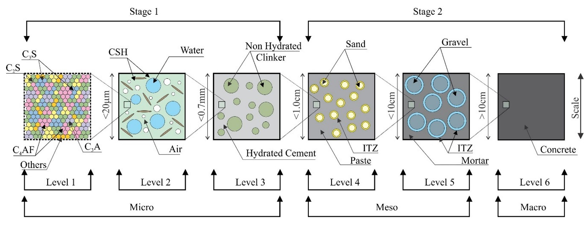
Mynd 2.16 Uppbygging steinsteypu á mismunandi stærðarskölum, frá efnisþáttum sements og sementsefju á míkróskala yfir í steinefni, múr og steinsteypu á stærri skala.
[dSdSRB23]
Trefjaplast er annað dæmi um misleitt efni. Það er samsett efni (e. composite material) þar sem glertrefjar eru umluktar fjölliðum (plasti).
Fasarnir tveir gegna mismunandi hlutverkum. Glertrefjarnar veita efninu styrk og stífleika en plastið heldur trefjunum saman og flytur krafta á milli þeirra.
2.7.2. Fasar og dreifð efni
Ef efni samanstendur af tveimur fösum getur annar fasinn verið fíndreifður í hinum. Slíkt efni kallast dreift efni (e. disperse system).
Fasinn sem er dreifður kallast dreifður fasi en fasinn sem myndar samfellda umhverfið kallast samfelldur fasi.
Báðir fasarnir geta verið fast efni, vökvi eða gas og því geta myndast margar mismunandi gerðir dreifikerfa.
Dreifður fasi |
Samfelldur fasi |
Heiti |
Dæmi |
|---|---|---|---|
Fast efni |
Fast efni |
Föst lausn |
Sumar málmblöndur og gler |
Fast efni |
Vökvi |
Sviflausn |
Málning fyrir hörðnun eða þornun |
Fast efni |
Gas |
Reykur |
Ryk í lofti |
Vökvi |
Fast efni |
Föst þeyta |
Steinsteypa í hörðnun |
Vökvi |
Vökvi |
Þeyta |
Málning |
Vökvi |
Gas |
Úði |
Þoka í andrúmslofti |
Gas |
Fast efni |
Föst froða |
Frauðplast |
Gas |
Vökvi |
Froða |
Frauðplast í framleiðslu |
Í raunverulegum byggingarefnum er ekki alltaf hægt að greina skýrt á milli dreifða fasans og samfellda fasans.
Í frauðplasti má til dæmis líta bæði á plastið og loftið sem samfelldan fasa, eftir því hvernig uppbyggingin er skoðuð. Á sama hátt getur verið erfitt að ákvarða hvort fasti eða fljótandi fasinn sé samfelldur meðan sement er að harðna.
2.7.3. Þeytur
Þeyta (e. emulsion) myndast þegar tveimur vökvum, sem leysast ekki upp hvor í öðrum, er blandað saman þannig að annar vökvinn dreifist sem smáir dropar í hinum.
Vökvinn sem myndar dropana er dreifði fasinn en vökvinn sem umlykur dropana myndar samfellda fasann.
Þeytur hafa tilhneigingu til að skiljast aftur í tvo fasa. Til þess að gera þær stöðugri má nota efni sem safnast á mörkum fasanna og draga úr tilhneigingu dropanna til að sameinast.
Dæmi um þeytu er málning.
2.7.4. Kvoðulausnir
Kvoðulausn (e. colloid) er blanda þar sem mjög smáar agnir eins efnis eru dreifðar í öðru efni.
Stærð agnanna skiptir máli fyrir hegðun blöndunnar. Í kvoðulausn eru agnirnar yfirleitt á stærðarbilinu frá um \(1\) nm upp í \(1000\) nm.
Ef agnirnar eru minni en um \(1\) nm er frekar talað um lausn. Ef þær eru stærri en um \(1000\) nm verður til grófari blanda þar sem agnirnar geta með tímanum fallið til botns.
Þessu má lýsa á einfaldan hátt:
lausn: agnir minni en um \(1\) nm,
kvoðulausn: agnir um \(1\)–\(1000\) nm,
grófari blanda: agnir stærri en um \(1000\) nm.
Í kvoðulausn eru agnirnar því nógu smáar til að haldast dreifðar í samfellda fasanum í langan tíma.
Agnum í kvoðulausn er haldið í stöðugri hreyfingu vegna árekstra við sameindir umhverfisins. Þessi óreglulega hreyfing kallast Brown-hreyfing (e. Brownian motion).
Yfirborð agnanna getur einnig verið rafhlaðið. Agnir með sömu hleðslu hrinda hver annarri frá sér og það getur komið í veg fyrir að þær sameinist í stærri agnir og falli til botns.
2.7.5. Gel
Gel myndast þegar agnir í kvoðulausn tengjast saman og mynda samhangandi þrívítt net. Vökvinn verður þá bundinn innan netsins og efnið fær fasta eða hálffasta lögun.
Gel er því kerfi þar sem bæði fastur og fljótandi fasi eru samfelldir. Fasti fasinn myndar grind eða net en vökvinn fyllir rýmið innan þess.
Myndun gels úr kvoðulausn kallast gelmyndun.
Gel eru mikilvæg í byggingarefnum. Við hvörf sements við vatn myndast til dæmis efni með gelkennda byggingu. Sú bygging hefur afgerandi áhrif á eiginleika harðnaðrar sementsefju.
2.8. Heimildir
Kenneth Breiðfjörð. Byggingarefni á íslandi. uppruni, flutningar til landsins ásamt kolefnisspori timburs. Master's thesis, Háskóli Íslands, 2011.
Rodrigo Mero Sarmento da Silva and Aline da Silva Ramos Barboza. Concrete modeling using micromechanical multiphase models and multiscale analysis. Rev. IBRACON Estrut. Mater., 2023.
GreenChemUofT. Green marketing in the plastic era: honesty or hype? Sep 2019. URL: https://greenchemuoft.wordpress.com/2019/09/13/green-marketing-in-the-plastic-era-honesty-or-hype/.
F.R. Gottfredsen og Anders Nielsen. Bygningsmaterialer grundlæggende egenskaber. Polyteknisk Forlag, 2000.
Guðmundur Halldórsson og Jón Sigurjónsson. Einangrun húsa. Rannsóknastofnun byggingariðnaðarins, 2 edition, 1978.
Björn Marteinsson og Páll Valdimarsson. Efnis- og orkunotkun vegna bygginga á íslandi. Árbók VFÍ/TFÍ, 14(1):223–228, 2002.
Jón Sigurjónsson. Rb-blað: Tré - trjátegundir og efniseiginleikar viðarins. Nýsköpunarmiðstöð Íslands, 2016.
Emil Engelund Thybring and Maria Fredriksson. Wood modification as a tool to understand moisture in wood. Forests, 12(3):372, mar 2021.
Jr. William D. Callister and David G. Rethwisch. Callister's Materials Science and Engineering. Wiley, 2020.